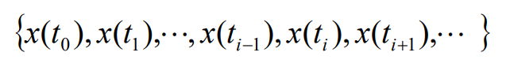
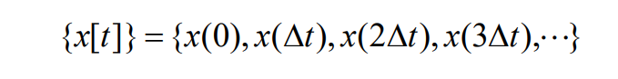
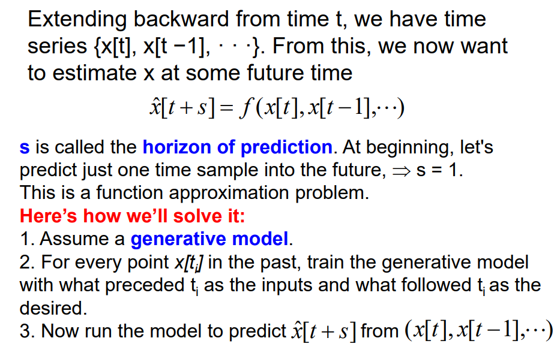
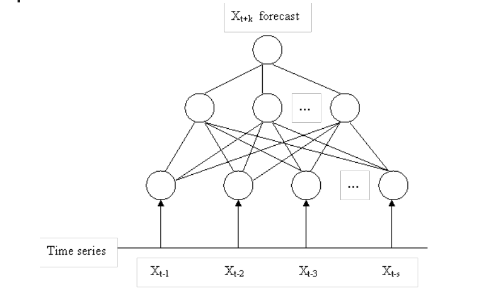
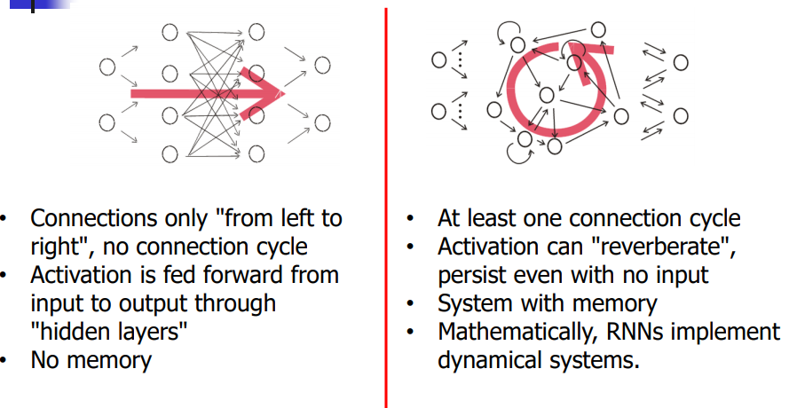
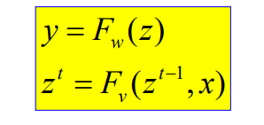
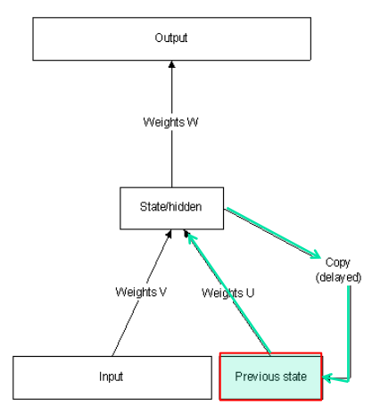
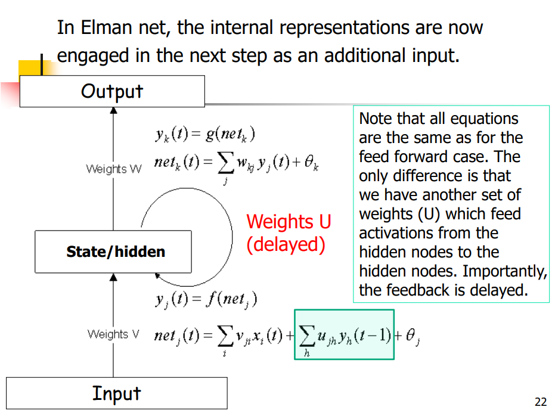
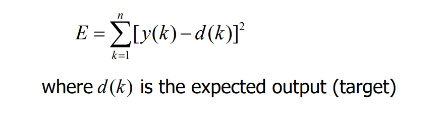

Lecture notes of 301 Lecture 10
Time Series Models
Modeling of a time series
Values of a time series at successive time indices are often correlated. Otherwise, prediction is impossible.
The statistical properties do not change with respect to time
- WSS(wide-sense stationarity) random process
- The mean and autocovatiance (均值和自变量) do not vary with respect to time
- Variance is finite for all times
- WSS(wide-sense stationarity) random process
In statistics and machine learning, a time-series is often described by a sequence of vectors (or scalars) which depend on time t:

It is the output of some process P that we are interested in:
The continuous signal x(t) is sampled at discrete points to get a series
In uniform sampling, if sampling period is delta t

Problem os predicting the future

function approximation problem 函数逼近问题
Time Series Prediction
- Why is it important
- Preventing undesirable events by forecasting the event, identifying the circumstances preceding the event, and taking coreective action so the event can be avoided; 通过预测来预防不想要发生的事件，确实事件发生前的情况，通过纠正来避免它再次发生
- Forecasting undesirable, yet unavoidable, events to pressmprtively lessen their impact;对于不想要发生但目前无法避免的事件，通过预测来明显减轻它们的影响
- Profiting from forecasting (Financial markets)
- Why is it difficult?
- Limited quantity of data
- Observed data series sometimes too short to partition
- Noise
- Erroneous data points
- Non-stationarity
- Fundamentals change over time, nonstationary
- Limited quantity of data
- Neural networks have been widely used as time series forecasters: most often these are feed-forward networks which employ a sliding window over the input sequence.
- The neural network sees the time series X1,…Xn in the form of many mappings of an input vector to an output value.
Time Series Prediction with ANN
- A number of adjoining data points of the time series(the input window X(t-s),X(t-s-1),…,X(t)) are mapped to the interval [0,1] and used as activations for the input of the input layer,
- The size s of the input window corresponds to the number of input units of the neural network.
- In the forward path, the activations are propagated over hidden layers to output units. The error used for the BP training is computed by comparing the value of the output unit with the value of the time series at time t+1.
- Training a MLP network with BP learning algorithm usually requires that all representations of the input set (called one epoch) are presented many times.
Time Series Prediction with ANN

Revisit of feed forwar NN
- A feed forward NN with hidden nodes, trained by BP, develops internal representations for the input signals that recode those signals in a manner that enables the network to produce the correct output.
Motivation for dynamic networks
- Sometimes, we require our model to be sensitive to inputs that were presented some time ago.
- In other words, our requirement is not met by a function ( no matter how complex it may be) and demands a model which mantains a state, or memory, over several presentations.
- Which applications need memory?
- sequential input (language)
- sequential output (speech)
Sequence Learning
- MLP & RBF networks are static networks: they learn a mapping from a single input signal to a single output response for an arbitrary large number of pairs
- Dynamic networks learn a mapping from a single input signal to a sequence of response signals, for an arbitrary number of pairs (signal,sequence).
- Typically the input signal to a dynamic network is an element of the sequence and then the network produces the rest of the sequence as a response.
- To learn sequences we need to include some form of memory (short term memory) to the network
- We can introduce memory effects with two principal ways:
- Implicit: Time lagged signal as input to a static network or as recurrent connections
- Explicit: Temporal Backpropagation Method
- In the implicit form, we assume that the environment from which we collect examples of (input signal, output sequence) os stationary. For the explicit form the environment could be non-stationary, i.e. the network can track the changes in the structure of the signal
Time Delayed Networks
- Signals can be buffered externally and presented at additional input modes (input banks)
- This is called Time Delayed Networks
- Time delayed Networks illustrate the implicit representation approach for sequence learning, which combine a static network with a memory structure.
Dynamical Neural Networks (Introducing time)
- Recurrent networks can explicitly deal with inputs that are presented sequentially, as they would almost always be in real problems
- Recurrent networks are fundamentally different from feed forward networks in that they not only operate upon an input but also a state,
- The ability of the net to reverberate and sustain activity can serve as a working memory
From feed-forward to recurrent NN

Elman Network
A simple recurrent neural netowkr
Elman network has a powerful prediction capability
Elman network which typically distinguishes between a state-output function and an input-state mapping.

where y is the output, x is the input and z is the state. t is and index in time.

Description

More details
- Four layers of Elman network
- Input layer
- Hidden layer
- Context layer
- The value of the context neuron is used as an extrainput signal for all the neurons in the hidden layer one time step later. In an Elman network, the weights from the hidden layer to context layer are set to one and are fixed because the values of the context neurons have to be copied exactly
- Output layer linear combination
Learning algorithm for Elman Network
- It adopts BP algorithm
- The error funtion:
- 